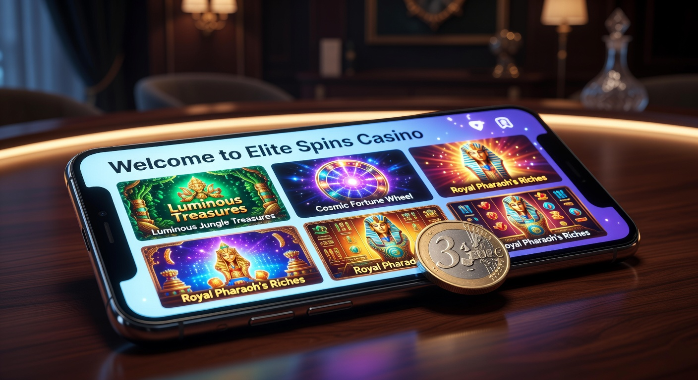
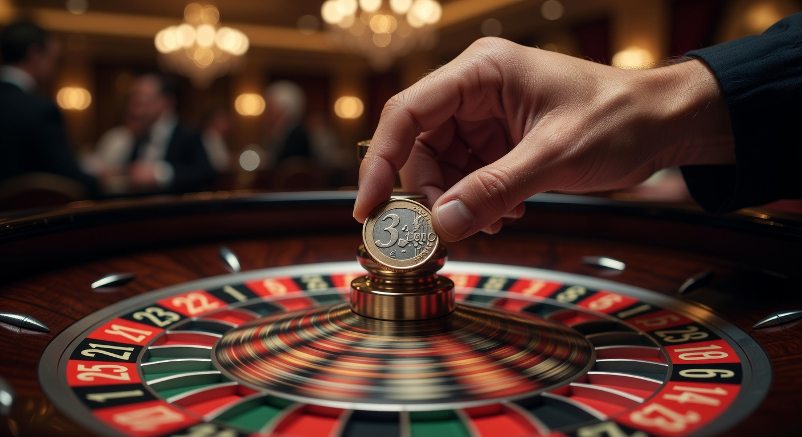
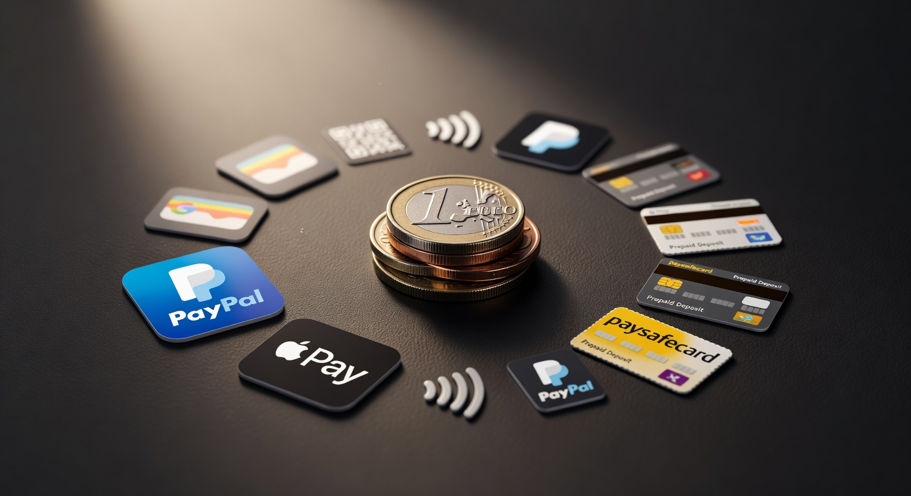
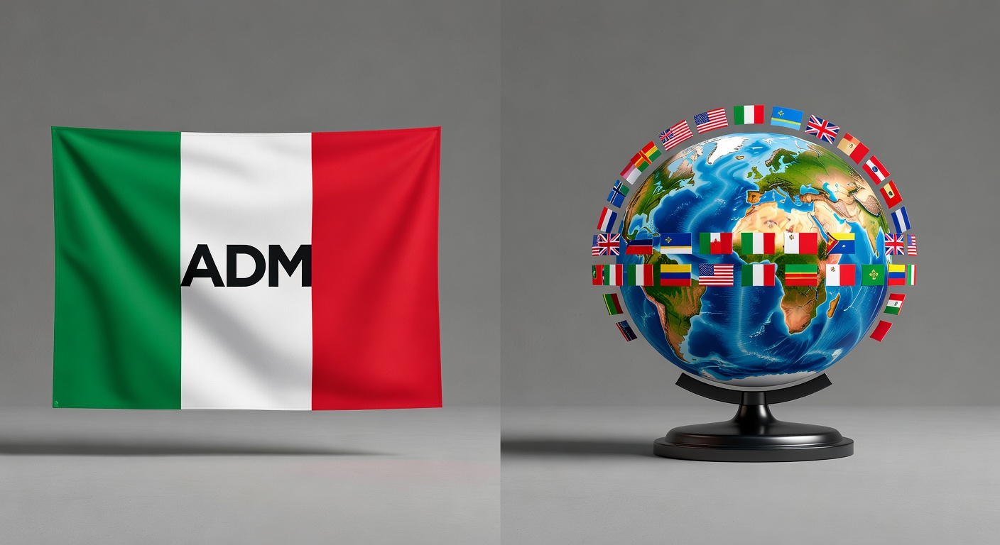
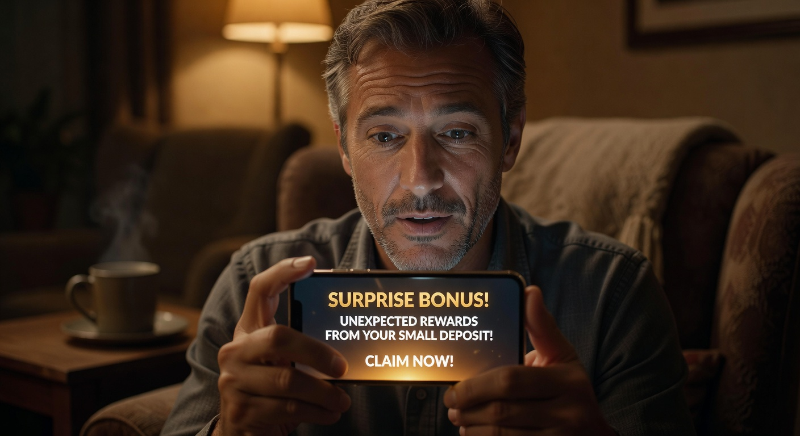

Casinò non AAMS deposito 3 euro
Nel corso del 2026, il mercato del gioco d'azzardo digitale in Italia ha subito trasformazioni radicali. La ricerca di flessibilità e accessibilità ha spinto una fetta sempre più ampia di utenti verso soluzioni che permettano di divertirsi senza dover investire capitali ingenti sin dal primo istante. In questo contesto, il concetto di casinò non aams deposito 3 euro è diventato un punto di riferimento per chi desidera testare nuove piattaforme internazionali con un rischio finanziario estremamente contenuto. Queste piattaforme, pur operando al di fuori del circuito dell'Agenzia delle Dogane e dei Monopoli (ADM), offrono standard di sicurezza elevatissimi e licenze riconosciute a livello globale.
L'evoluzione tecnologica del 2026 ha reso possibile l'integrazione di sistemi di pagamento istantanei che abbattono i costi di transazione, permettendo agli operatori di accettare ricariche minime che un tempo sarebbero state antieconomiche. Se un tempo la soglia d'ingresso standard era di 10 o 20 euro, oggi un casinò non aams deposito 3 euro rappresenta la nuova frontiera della democratizzazione del gioco online. In questa guida completa, esploreremo ogni dettaglio di questo fenomeno, analizzando i vantaggi, i rischi e le migliori piattaforme disponibili per i giocatori italiani.
Per chi cerca una soglia d'ingresso ancora più bassa, è interessante notare come esistano opzioni di casinò non aams deposito 1 euro che completano l'offerta per i giocatori occasionali. Tuttavia, la ricarica da tre euro rimane il "sweet spot" ideale, poiché permette spesso di attivare bonus di benvenuto o giri gratuiti che con un solo euro potrebbero non essere disponibili. La varietà di giochi offerta da questi siti è paragonabile, se non superiore, a quella dei siti locali, grazie a partnership con i più grandi fornitori di software del mondo.
Perché giocare sui casinò esteri con ricarica minima?
Scegliere un casinò non aams deposito 3 euro nel 2026 non è solo una questione di risparmio, ma una scelta strategica legata all'esperienza d'uso. I siti internazionali offrono spesso un'interfaccia più moderna, processi di registrazione semplificati e, soprattutto, l'assenza delle restrizioni imposte dalla normativa italiana sui limiti di giocata e sulle tempistiche delle slot machine. Questo permette una libertà d'azione superiore, mantenendo comunque un controllo ferreo sul proprio budget grazie alla ricarica minima così contenuta.
Un altro motivo fondamentale risiede nella velocità. Mentre i circuiti tradizionali possono talvolta richiedere verifiche lunghe, i siti esteri hanno ottimizzato le procedure di KYC (Know Your Customer) per essere rapide e meno invasive, specialmente per chi deposita piccole somme. Inoltre, la competizione globale tra gli operatori spinge queste piattaforme a offrire payout mediamente più alti (RTP) rispetto alla controparte nazionale, garantendo una maggiore equità teorica nel lungo periodo per ogni esperienza di gioco.
Infine, la possibilità di utilizzare un casinò non aams deposito 3 euro consente di testare il servizio clienti e la velocità dei prelievi senza esporsi troppo. Se la piattaforma non soddisfa le aspettative, il giocatore ha perso solo una cifra irrisoria, paragonabile al costo di una colazione al bar. Questa modalità di "test drive" è diventata la pratica standard tra i giocatori esperti in Italia durante tutto il 2026.
Migliori siti di casinò non AAMS con deposito 3 euro

La selezione di piattaforme affidabili è fondamentale per garantire un ambiente protetto. Nel 2026, alcuni brand si sono distinti per la loro capacità di gestire micro-transazioni con efficienza millimetrica. Ecco una panoramica dei migliori siti attualmente operativi che accettano versamenti minimi a partire da 3 euro:
| Brand | Licenza | Bonus Minimo | Punto di Forza |
|---|---|---|---|
| Millioner | Curacao eGaming | 100% fino a 500€ | Ampia selezione di slot |
| Roulettino | Malta (MGA) | 50 FS senza deposito | Interfaccia mobile eccellente |
| Wyns | Kahnawake | Cashback settimanale | Programma VIP immediato |
| Kinbet | Curacao | Bonus Sport + Casino | Scommesse live integrate |
| Dragonia | Anjouan | Tornei giornalieri | Grafica immersiva 3D |
| Divaspin | Gibraltar | Bonus ricarica weekend | Assistenza 24/7 in italiano |
Ogni casinò non aams deposito 3 euro elencato sopra è stato verificato per quanto riguarda la regolarità dei pagamenti e la trasparenza dei termini e delle condizioni. Ricordiamo che, sebbene il deposito minimo sia basso, i requisiti di scommessa (wagering) possono variare notevolmente da una piattaforma all'altra.
Analisi delle piattaforme più popolari in Italia
Tra le opzioni più apprezzate, spicca Millioner, un operatore che ha saputo conquistare il pubblico italiano grazie a un catalogo che supera i 5.000 titoli. La sua forza risiede nella capacità di elaborare depositi da 3 euro tramite sistemi come Skrill e Neteller istantaneamente, permettendo di iniziare a giocare in pochi secondi. La navigazione è fluida e ottimizzata per chi utilizza smartphone di ultima generazione.
Un'altra scelta di rilievo è Roulettino. Questo sito è particolarmente indicato per gli amanti dei classici da tavolo. Nonostante il nome suggerisca una specializzazione nella roulette, la piattaforma offre una vasta varietà di giochi che include blackjack, baccarat e slot innovative. Il deposito minimo di 3 euro qui funge spesso da chiave per sbloccare promozioni temporanee molto vantaggiose.
Per chi invece cerca un'esperienza più moderna e legata al mondo delle criptovalute, Wyns rappresenta l'eccellenza. Accetta depositi minimi equivalenti a 3 euro in Bitcoin, Ethereum e Litecoin, garantendo l'anonimato e la velocità che solo la blockchain può offrire nel 2026. È la scelta ideale per chi vuole mantenere la propria privacy finanziaria lontano dai circuiti bancari tradizionali.
Criteri di selezione per la nostra top list
Non tutti i casinò non aams deposito 3 euro sono uguali. Per redigere la nostra classifica, abbiamo utilizzato criteri rigorosi che vanno oltre la semplice soglia di ingresso. In primo luogo, valutiamo la solidità della licenza internazionale. Anche se non possiedono la licenza ADM, devono dimostrare di essere regolamentati da autorità rispettate come la MGA di Malta o la licenza di Curacao, che garantiscono l'imparzialità dei software attraverso test RNG (Random Number Generator) costanti.
In secondo luogo, analizziamo la qualità dei metodi di pagamento disponibili. Un sito che permette un deposito così basso deve anche assicurare che non ci siano commissioni nascoste che mangerebbero metà del capitale versato. Valutiamo positivamente la presenza di Skrill Neteller e altre opzioni di portafoglio elettronico rapide e sicure.
Infine, consideriamo l'esperienza utente complessiva. Questo include la reattività del supporto clienti, la facilità di navigazione del sito e la trasparenza delle politiche di gioco responsabile. Un casinò non aams deposito 3 euro di qualità deve trattare il giocatore che deposita poco con lo stesso rispetto riservato a un high roller.
Vantaggi di un versamento così basso

Il vantaggio principale di un casinò non aams deposito 3 euro è indubbiamente la gestione del rischio. In un'epoca in cui l'inflazione e l'incertezza economica possono pesare sul budget familiare, poter accedere a una serata di intrattenimento digitale con soli 3 euro è un beneficio non trascurabile. Questo approccio permette di divertirsi senza il timore di perdite significative, mantenendo il gioco in una dimensione puramente ricreativa.
Inoltre, la ricarica minima consente di testare la fortuna su diverse slot o tavoli senza impegnarsi a lungo su un unico operatore. Si può versare in tre diversi casinò per scoprire quale offre il software più fluido o la grafica più accattivante. Molti giocatori nel 2026 utilizzano questa tecnica per "scaldare" gli account o per partecipare a tornei di slot dove l'ingresso è gratuito o richiede una minima attività di gioco.
Un altro aspetto positivo riguarda l'attivazione di bonus specifici. Alcuni migliori casino esteri offrono pacchetti di benvenuto che, pur richiedendo versamenti minimi bassi, regalano un numero elevato di FS (Free Spins). Vedere il proprio deposito di 3 euro trasformarsi in 50 o 100 giri gratuiti è un incentivo potente che aumenta esponenzialmente le probabilità di generare una vincita prelevabile partendo da quasi zero.
Metodi di pagamento compatibili con la ricarica da 3€

La gestione delle micro-transazioni richiede infrastrutture finanziarie avanzate. Non tutti i metodi di pagamento sono adatti a processare soli 3 euro a causa delle commissioni fisse. Tuttavia, nel 2026, molte soluzioni si sono adattate per servire questa nicchia di mercato in forte espansione. I giocatori italiani hanno oggi a disposizione una vasta selezione di strumenti per ricaricare il proprio conto in modo efficiente.
Le carte di credito tradizionali rimangono una scelta valida, ma sono spesso surclassate dai portafogli elettronici. Questi ultimi offrono una barriera di sicurezza aggiuntiva, non richiedendo la condivisione dei dati bancari direttamente con il casinò. Inoltre, la velocità di esecuzione è un fattore determinante per chi vuole iniziare a scommettere immediatamente.
E-wallet: Skrill, Neteller e portafogli digitali
Gli e-wallet sono i re incontrastati dei casinò non aams deposito 3 euro. Strumenti come Skrill e Neteller permettono di spostare piccole somme con commissioni minime o nulle per l'utente finale. Questi portafogli sono integrati nativamente in piattaforme come Kinbet, garantendo transazioni sicure e tracciabili. La facilità con cui è possibile ricaricare il wallet tramite bonifico o carta li rende estremamente versatili.
Anche PayPal, sebbene più selettivo nella collaborazione con i siti non AAMS, inizia a comparire su alcune piattaforme internazionali di alto profilo che rispettano rigidi protocolli di legalità nei mercati di origine. L'uso di un e-wallet facilita inoltre il processo di prelievo: una volta ottenuta una vincita partendo dai propri 3 euro, i fondi possono essere trasferiti nuovamente sul portafoglio in poche ore, a differenza dei giorni richiesti dai bonifici bancari.
Criptovalute: la nuova frontiera del gioco online
Nel 2026, l'uso delle criptovalute non è più un tabù ma una realtà consolidata nel settore dei casinò non aams deposito 3 euro. Monete come Bitcoin, Ethereum e Litecoin sono ideali per i piccoli depositi grazie alla scalabilità delle reti layer-2, che permettono commissioni di rete (gas fees) quasi inesistenti. Piattaforme come Dragonia hanno abbracciato totalmente questa tecnologia, offrendo persino bonus aggiuntivi per chi deposita in crypto.
Il vantaggio delle criptovalute risiede anche nell'assenza di confini geografici e nella velocità. Un deposito in Litecoin viene confermato in pochi minuti, permettendo l'accesso istantaneo alla propria esperienza di gioco preferita. Inoltre, per molti utenti, l'uso di valute digitali rappresenta un modo per separare il budget destinato all'intrattenimento dal conto corrente principale, favorendo una gestione del denaro più ordinata.
Carte prepagate e altre opzioni rapide
Le carte prepagate come Paysafecard continuano a essere popolari per la loro semplicità. È possibile acquistare un voucher fisico o digitale e inserire il codice sul sito del casinò. Questo metodo è eccellente per chi non possiede un conto bancario o preferisce non usare strumenti digitali complessi. Tuttavia, bisogna verificare che il casinò non aams deposito 3 euro scelto accetti voucher di taglio così piccolo, poiché spesso il minimo per Paysafecard è fissato a 10 euro.
Esistono poi soluzioni locali e innovative come i pagamenti tramite credito telefonico o app di pagamento istantaneo (come Revolut o Wise) che stanno guadagnando terreno. Queste opzioni di ricarica sono particolarmente apprezzate dai giocatori più giovani che cercano immediatezza e integrazione totale con i propri dispositivi mobili. La flessibilità è la parola d'ordine del 2026.
Differenze tra licenza ADM e licenze internazionali

Comprendere la distinzione tra un sito AAMS (ora ADM) e uno internazionale è fondamentale. La licenza italiana è rilasciata dallo stato e impone regole molto rigide, tra cui la tassazione alla fonte e l'obbligo di limitare certi tipi di promozioni. Un casinò non aams deposito 3 euro opera invece con licenze rilasciate da altre giurisdizioni, come Malta (MGA) o Curacao. Questo non significa che siano siti illegali, ma che seguono normative diverse, spesso più permissive per il giocatore.
Le licenze internazionali permettono agli operatori di offrire una selezione di giochi molto più vasta, includendo titoli di provider che non hanno ancora completato l'iter burocratico in Italia. Inoltre, i siti non AAMS non sono collegati al registro di autoesclusione trasversale italiano, il che richiede una maggiore responsabilità individuale da parte del giocatore. La sicurezza tecnica (crittografia SSL a 128 o 256 bit) è identica, garantendo la protezione dei dati sensibili e delle transazioni finanziarie.
Un'altra differenza chiave risiede nei limiti di puntata. Nei siti ADM, spesso esistono tetti massimi o restrizioni sulla velocità dei giri delle slot. Sui casinò esteri come Divaspin, queste limitazioni sono generalmente assenti, lasciando all'utente la libertà di decidere come e quanto giocare. È questo senso di libertà, unito alla possibilità del deposito minimo, che attira migliaia di italiani ogni giorno.
Bonus e promozioni: cosa aspettarsi con 3 euro?

Molti si chiedono se un deposito di soli 3 euro sia sufficiente per sbloccare i famosi bonus di benvenuto. La risposta nel 2026 è un deciso "sì", ma con alcune precisazioni. Mentre i bonus percentuali (es. 100% sul deposito) potrebbero non essere entusiasmanti su una cifra così piccola (riceveresti solo altri 3 euro), molti casinò non aams deposito 3 euro offrono promozioni a pacchetto fisso.
Ad esempio, è comune trovare offerte del tipo "Deposita 3€ e ricevi 20€ di bonus" oppure "Deposita 3€ e ottieni 50 Giri Gratuiti". Queste promozioni sono progettate specificamente per attirare nuovi utenti e permettere loro di esplorare la piattaforma. È importante leggere attentamente i termini e le condizioni (T&C) per capire quante volte il bonus debba essere giocato prima di poter essere convertito in denaro reale prelevabile.
Bonus di benvenuto e giri gratuiti
I giri gratuiti, o FS, sono la promozione preferita dagli utenti dei casinò non aams deposito 3 euro. Spesso, questi giri sono validi sulle slot più popolari del momento, come quelle prodotte da NetEnt o Microgaming. Vincere una somma significativa partendo da un giro omaggio ottenuto con soli 3 euro è uno degli scenari più ambiti. Alcuni siti, come Betlabel, offrono persino giri gratuiti senza requisiti di puntata, dove le vincite sono immediatamente prelevabili.
Il bonus di benvenuto può anche includere una piccola somma da spendere nelle scommesse sportive se il sito dispone di una sezione bookmaker. Questo approccio ibrido è tipico di piattaforme come 22bet, che nel 2026 continuano a dominare il mercato internazionale grazie alla loro incredibile flessibilità nei massimali e nei minimali di versamento.
Programmi fedeltà e cashback
Anche chi effettua ricariche minime può beneficiare dei programmi fedeltà. In un casinò non aams deposito 3 euro, ogni centesimo giocato contribuisce all'accumulo di punti. Questi punti possono poi essere scambiati per ulteriori bonus, gadget o ingressi a tornei esclusivi. Il cashback, ovvero il rimborso di una percentuale delle perdite, è un'altra caratteristica vitale che protegge parzialmente il budget del giocatore.
Siti come Wild Tokyo o 7Bit hanno implementato sistemi di gamification dove il giocatore avanza di livello completando missioni giornaliere. Anche con un deposito di 3 euro, è possibile completare alcune di queste sfide, rendendo l'intera esperienza di gioco molto più simile a un videogioco interattivo che a un semplice casinò online tradizionale. Questo aumenta il valore percepito di ogni singolo euro investito.
Ampia varietà di giochi disponibili sulle piattaforme estere
La forza di un casinò non aams deposito 3 euro risiede nel suo catalogo. Grazie all'assenza di barriere d'ingresso elevate, queste piattaforme possono ospitare migliaia di titoli differenti. La varietà di giochi è impressionante: dalle slot machine classiche a tre rulli alle moderne video slot con migliaia di linee di pagamento (Megaways), passando per i giochi da tavolo più amati come il poker, il blackjack e la baccarat.
Nel 2026, la tecnologia ha permesso la nascita di nuove categorie di gioco, come i "Crash Games" (ad esempio Aviator o JetX), che sono perfetti per chi deposita 3 euro. In questi giochi, è possibile puntare anche soli 10 centesimi e tentare di moltiplicare la posta in pochi secondi. La rapidità di queste sessioni si sposa perfettamente con l'idea di un piccolo deposito per un divertimento veloce e adrenalinico.
Slot machine e software provider internazionali
La qualità delle slot dipende dai fornitori di software. Nei migliori casinò non aams deposito 3 euro, troverete i giganti del settore. NetEnt continua a stupire con grafiche cinematografiche, mentre Microgaming offre i jackpot progressivi più alti del mondo (come il celebre Mega Moolah). La presenza di questi nomi è una garanzia di equità, poiché i loro giochi sono certificati da enti terzi indipendenti che ne assicurano l'imprevedibilità dei risultati.
Inoltre, molti casinò esteri collaborano con studi emergenti che offrono meccaniche innovative e temi originali, spesso non disponibili sul mercato italiano regolamentato. Questo significa che con soli 3 euro potete accedere a titoli d'avanguardia che rappresentano lo stato dell'arte dell'industria del gambling nel 2026. L'innovazione non si ferma mai e i siti internazionali sono sempre i primi a implementarla.
Esperienza live con croupier dal vivo
Uno dei settori che ha visto la crescita maggiore è il casinò live. Grazie a connessioni 5G e 6G ultra-veloci diffuse in tutta Italia nel 2026, giocare in streaming con un vero croupier è un'esperienza fluida e realistica. Molti tavoli live accettano puntate minime molto basse, permettendo anche a chi ha utilizzato un casinò non aams deposito 3 euro di sedersi virtualmente al tavolo verde e interagire con lo staff e gli altri giocatori.
Provider come Evolution Gaming offrono show spettacolari (Game Shows) che fondono il gioco d'azzardo con l'intrattenimento televisivo. Titoli come "Crazy Time" o "Monopoly Live" sono accessibili con budget ridotti e offrono la possibilità di vincite spettacolari. L'atmosfera è vibrante e professionale, garantendo un'immersione totale che nulla ha da invidiare ai casinò fisici di Las Vegas o Montecarlo.
Sicurezza e protezione dei dati personali
Nonostante l'assenza della licenza italiana, la sicurezza in un casinò non aams deposito 3 euro serio è una priorità assoluta. Nel 2026, la protezione dei dati è regolata da protocolli internazionali rigorosi. L'uso della crittografia SSL assicura che nessuna terza parte possa intercettare le informazioni personali o finanziarie dell'utente. Inoltre, l'adozione dell'autenticazione a due fattori (2FA) è diventata lo standard per prevenire accessi non autorizzati agli account.
Per quanto riguarda l'equità del gioco, le licenze di Curacao e Malta impongono l'uso di software RNG certificati. Questo significa che ogni rotazione di slot o mano di carte è pura casualità, non manipolabile dall'operatore. Leggere le recensioni e consultare portali informativi come Wikipedia può aiutare a comprendere meglio la storia e la reputazione di una determinata società di gestione prima di procedere al deposito.
Un altro aspetto della sicurezza è la procedura di KYC. Sebbene possa sembrare fastidioso dover inviare una copia del documento, questa è la prova che il casinò opera legalmente e combatte il riciclaggio di denaro. In un casinò non aams deposito 3 euro, la verifica dell'identità è solitamente richiesta solo al momento del primo prelievo o al raggiungimento di determinate soglie, rendendo l'ingresso iniziale molto snello.
Consigli per un approccio al gioco responsabile
Il gioco d'azzardo deve rimanere una forma di divertimento. Anche se si sceglie un casinò non aams deposito 3 euro proprio per limitare le spese, è fondamentale mantenere un atteggiamento responsabile. Il 2026 ha portato con sé una maggiore consapevolezza sui rischi della dipendenza, e anche gli operatori esteri offrono ora strumenti avanzati di autocontrollo. È possibile impostare limiti di deposito giornalieri, settimanali o mensili direttamente dal pannello utente.
Ecco alcuni consigli pratici per una gestione sana:
- Non inseguire le perdite: Se i 3 euro finiscono, non sentirsi obbligati a ricaricare immediatamente.
- Stabilire un tempo massimo: Decidere in anticipo quanto tempo dedicare alla sessione di gioco.
- Giocare solo denaro che ci si può permettere di perdere: Anche se 3 euro sono pochi, devono far parte del budget destinato allo svago.
- Evitare il gioco sotto l'effetto di alcol o stress: La lucidità è fondamentale per godersi l'esperienza e prendere decisioni corrette.
In caso di necessità, esistono numerose organizzazioni internazionali che offrono supporto gratuito e anonimo. Consultare siti come BeGambleAware può fornire risorse utili per chiunque senta che il gioco sta diventando un problema. Ricordate: la vittoria più grande è sapere quando fermarsi.
Conclusioni
In conclusione, il casinò non aams deposito 3 euro rappresenta una delle opzioni più intelligenti e accessibili per l'intrattenimento digitale nel 2026. Questa modalità permette di esplorare mondi virtuali ricchi di adrenalina, testare le ultime novità tecnologiche dei migliori provider e godere di bonus generosi, il tutto con un investimento iniziale minimo. La flessibilità dei metodi di pagamento, unita alla sicurezza delle licenze internazionali, rende queste piattaforme estremamente competitive e sicure.
Che siate amanti delle slot di ultima generazione, appassionati di scommesse sportive o cercatori dell'emozione dei tavoli live, i siti non AAMS offrono una libertà d'azione che il mercato nazionale fatica a eguagliare. Tuttavia, la responsabilità rimane nelle mani del giocatore: scegliere piattaforme recensite positivamente, come Millioner o Kinbet, e approcciarsi al gioco con moderazione sono i segreti per un'esperienza gratificante e sicura. Il futuro del gioco è qui, ed è più accessibile che mai.
Domande Frequenti (FAQ)
È legale giocare in un casinò non aams deposito 3 euro dall'Italia?
Sì, nel 2026 non esiste alcuna legge che proibisca ai cittadini italiani di iscriversi e giocare su siti con licenze internazionali. L'importante è che l'utente sia consapevole delle differenze normative e della tassazione sulle eventuali vincite, che deve essere dichiarata nei redditi se non trattenuta alla fonte.
Posso davvero ottenere un bonus con soli 3 euro?
Certamente. Molti operatori creano promozioni specifiche per i micro-depositi. Potresti non ricevere un bonus enorme in termini di denaro, ma spesso riceverai molti FS (giri gratuiti) che possono portare a vincite interessanti. Controlla sempre la sezione promozioni del sito scelto.
Quali sono i metodi migliori per ricaricare 3 euro?
I portafogli elettronici come Skrill Neteller e le criptovalute come Litecoin o Bitcoin sono i migliori, poiché gestiscono le piccole transazioni con velocità e commissioni molto basse. Le carte di credito sono valide, ma a volte le banche potrebbero applicare commissioni fisse che rendono il deposito meno conveniente.
Cosa succede se vinco molto partendo da un deposito minimo?
Se vinci, i soldi sono tuoi. Il casinò ti chiederà di completare il processo di KYC inviando i tuoi documenti e poi potrai prelevare la somma utilizzando lo stesso metodo usato per il deposito. La trasparenza dei pagamenti è uno dei criteri che usiamo per selezionare i migliori casino.
I giochi sono onesti nei casinò non AAMS?
Sì, a patto di scegliere siti regolamentati da licenze serie (MGA, Curacao). Questi casinò utilizzano software prodotti da aziende leader come NetEnt e Microgaming, che vengono regolarmente testati da laboratori indipendenti per garantire che l'RNG sia equo e non manomesso.

Scrittore e ricercatore nel campo del turismo e delle attività outdoor in Italia.